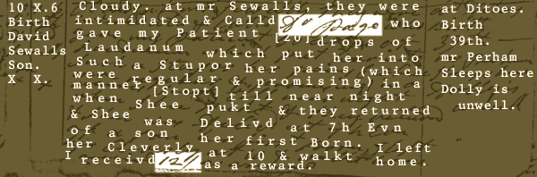
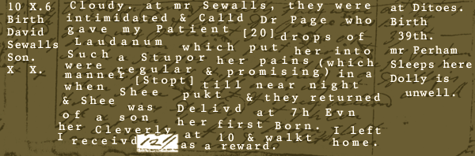
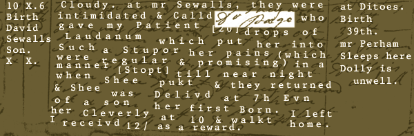

Diary 10 October 1794

<: mwGetSsv('dr_page') == 8 && mwGetSsv('twelve') < 5 :>

<: mwGetSsv('dr_page') < 8 && mwGetSsv('twelve') == 5 :>

Select either word to begin.
Select "12/" Select "Dr. Page"